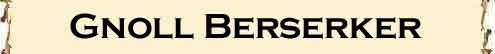
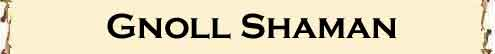

|
|
Ambiente/Habitat | Colline e Pianure; Sotterranei |
| Frequenza | Comune | |
| Organizzazione | Tribù | |
| Periodo di Attività | Any | |
| Dieta | Carnivoro | |
| Intelligenza | Low Intelligence (5-7) | |
| Punti Combattimento | 5 Punti Combattimento | |
| Tesoro | Regolare con doppio delle monete | |
| Allineamento Dominante | Caotico Malvagio | |
| Numero di Apparizione | 3d4 | |
| Classe Armatura | 5 corazza /10 naturale (-1 con scudo) | |
| Movimento | 6 esagoni | |
| Dadi Vita | 2 (+5 punti ferita) | |
| Thac0 | 18 | |
| Numero di Attacchi | Arma, 1 attacco al
round; in alternativa un Morso |
|
| Danni | Danno dell'arma,
+2 dovuto alla forza; in alternativa Morso 1d4 (taglio) |
|
| Poteri Offensivi | Istinto Predatorio; Attacco in Branco |
|
| Poteri Difensivi | Robustezza Superiore | |
| Poteri Generici | Nessuno | |
| Vulnerabilità | Nessuna | |
| Resistenza alla Magia | Nessuna | |
| Sensi | Vista Comune, Sensi Superiori, Oscurovisione | |
| Dimensioni | Large (2,25 m. alto) | |
| Morale | Steady (11) | |
| Valore in Punti Esperienza | 140 |
| MODIFICATORI AI TIRI SALVEZZA | |||||||||||||||||||||||
| COR | 0 | 52 | ENV | 0 | 57 | MAG | 0 | 65 | MAL | +5 | 46 | MEN | 0 | 63 | RIF | 0 | 59 | ROB | 0 | 54 | VEL | 0 | 48 |
Descrizione
Gli Gnoll sono degli umanoidi malvagi che possiedono una testa da iena, essi si
aggirano solitamente in tribù disorganizzate. L'altezza media per uno gnoll è di
2,25 metri, possiedono una pelle grigio-rossastra, la pelliccia ricopre il loro
corpo, la testa da iena è ricoperta da una folta criniera grigio-giallastra. Uno
gnoll adulto pesa circa 150 kg.
Combat
Gli gnoll amano attaccare quando hanno la superiorità numerica, facendo affidamento su tattiche basate sul numero e sulla loro forza fisica per sopraffare e distruggere i nemici. Non mostrano molta disciplina in battaglia, a meno che non abbiano un forte capo che riesca a mantenere i ranghi e a farli combattere come un'unità. Benché, di solito, non preparino trappole, si servono di imboscate e cercano di attaccare il nemico ai fianchi. Gli gnoll utilizzano una varietà di armi, solitamente non estremamente raffinate ma tutte efficaci.
Per determinare
come sono armati tirare 1d12:
1-2) Scudo e Shoka: Iniziativa +7 Danni 2d4+2 (Metallo, Taglio)
3) Scudo e Carrikal: Iniziativa +6 Danni 1d6+3 (Metallo, Taglio)
4) Scudo e Morning Star: Iniziativa +7 Danni 1d8+2 (Metallo, Botta)
5-7) Scudo e Mace Axe: Iniziativa +6 Danni 1d8+2 (Metallo, Taglio)
8-9) Scudo e Flang Mace: Iniziativa +4 Danni 1d6+2 (Metallo, Taglio)
10-11) Great Mace: Iniziativa +8 Danni 1d8+3 (Metallo, Botta)
12) Two Handed Battle Axe: Iniziativa +9 Danni 1d10+2 (Metallo, Botta)
ISTINTO PREDATORIO (Moderate Special Ability): La creatura possiede un forte istinto predatorio, per tale motivo costei riceve un bonus costante di +1 ai suoi tiri per colpire.
ATTACCO IN BRANCO (Moderate Special Ability): La creatura è particolarmente abile quando combatte in branco uno stesso nemico. Per questo motivo, se una di queste creatura attacca un bersaglio che si trovi in corpo a corpo con almeno altre due creature dello stesso tipo costei ottiene un bonus di +1 al tiro per colpire e di +2 ai danni (questo beneficio si considera a tutti gli effetti un bonus dovuto alla forza della creatura).
ROBUSTEZZA SUPERIORE (Typical Ability): Il fisico della creatura è estremamente robusto. Ciò conferisce alla stessa una robustezza superiore che gli garantisce 5 punti ferita supplementari.
LESSER COMBO - ISTINTO PREDATORIO e ATTACCO IN BRANCO - Le due abilità costituiscono una combo in quanto entrambe aumentano le possibilità di colpire della creatura. In considerazione che, in ogni caso, la possibilità di utilizzo della seconda abilità nel corso di un combattimento, è limitata, la combo può considerarsi minore.
Habitat/Society
Gli gnoll si sottopongono al comando del più forte della loro tribù, che si serve della paura, dell'intimidazione e della forza per rimaner e al potere. Se viene ucciso un capotribù, i membri più forti della tribù lottano per diventare il nuovo capotribù; se i combattenti ci mettono troppo o se troppi combattenti muoiono, la tribù si può dividere in tanti branchi che se ne vanno ciascuno per la propria strada sotto il comando di uno gnoll dominante. Una banda o una tribù includono tanti giovani che non combattono quanti sono gli adulti. Le tane degli gnoll sono accampamenti fortificati o complessi sotterranei. Gli gnoll fanno prigionieri per sfruttarli come schiavi, e ogni tana ne ha almeno uno ogni dieci adulti. Gli schiavi sono di solito umanoidi di taglia media o piccola od umani.
Ecology
Gli gnoll amano cibarsi di carne cruda e fresca, preferendo creature intelligenti per godere nel vederle soffrire mentre si cibano delle loro carni. Organizzando pattuglie di caccia o di razziatori le tribù di gnoll rappresentano una minaccia ed un pericolo costante per le comunità limitrofe. La vita media di uno gnoll non supera comunemente i cinquant'anni.

|
|
Ambiente/Habitat | Colline e Pianure; Sotterranei |
| Frequenza | Non Comune | |
| Organizzazione | Tribù | |
| Periodo di Attività | Any | |
| Dieta | Carnivoro | |
| Intelligenza | Low Intelligence (5-7) | |
| Punti Combattimento | 9 Punti Combattimento | |
| Tesoro | Regolare con doppio delle monete | |
| Allineamento Dominante | Caotico Malvagio | |
| Numero di Apparizione | 1d3 | |
| Classe Armatura | 5 corazza /10 naturale | |
| Movimento | 6 esagoni | |
| Dadi Vita | 3 (+5 punti ferita) | |
| Thac0 | 16 | |
| Numero di Attacchi | Due armi, 2 attacchi
simultanei al
round; in alternativa un Morso |
|
| Danni | Danno dell'arma,
+3 dovuto alla forza; in alternativa Morso 1d6 (taglio) |
|
| Poteri Offensivi | Istinto Predatorio; Attacco in Branco; Abilità Tattica |
|
| Poteri Difensivi | Robustezza Superiore | |
| Poteri Generici | Nessuno | |
| Vulnerabilità | Nessuna | |
| Resistenza alla Magia | Nessuna | |
| Sensi | Vista Comune, Sensi Superiori, Oscurovisione | |
| Dimensioni | Large (2,25 m. alto) | |
| Morale | Elite (13) | |
| Valore in Punti Esperienza | 256 |
| MODIFICATORI AI TIRI SALVEZZA | |||||||||||||||||||||||
| COR | +5 | 44 | ENV | 0 | 54 | MAG | 0 | 62 | MAL | +5 | 42 | MEN | 0 | 60 | RIF | 0 | 56 | ROB | 0 | 51 | VEL | 0 | 44 |
Combat
Gli gnoll berserker attaccano in corpo a corpo sfruttando la loro forza e la loro capacità di utilizzare due armi simultaneamente. In particolare costoro possono utilizzare senza penalità un'arma di dimensioni medie ed una di dimensioni piccole. Comunemente costoro prediligono come arma secondaria l'Horseman's Flail.
Per determinare
come sono armati tirare 1d6:
1-2-3) Shoka [Iniziativa +7 Danni 2d4+3 (Metallo, Taglio)] ed Horseman's Flail [Iniziativa +4 Danni
1d4+3 (Metallo, Botta)]
4) Carrikal [Iniziativa +6 Danni 1d6+4 (Metallo, Taglio)] ed Horseman's Flail [Iniziativa +4 Danni
1d4+3 (Metallo, Botta)]
5-6) Morning Star [Iniziativa +7 Danni 1d8+3 (Metallo, Botta)] ed Horseman's
Flail [Iniziativa +4 Danni 1d4+3 (Metallo, Botta)]
7-9) Mace Axe [Iniziativa +6 Danni 1d8+3 (Metallo, Taglio)] ed Horseman's Flail
[Iniziativa +4 Danni 1d4+3 (Metallo, Botta)]
10-12) Flang Mace [Iniziativa +4 Danni 1d6+3 (Metallo, Taglio)] ed Horseman's
Flail [Iniziativa +4 Danni 1d4+3 (Metallo, Botta)]
IMPETO
SUPERIORE
(Superior Special
Ability):
Questa creatura riesce a colpire i propri avversari con impeto superiore, per
tale motivo
riceve un bonus costante di +2 ai
suoi tiri per colpire.
ATTACCO IN BRANCO (Moderate Special Ability): La creatura è particolarmente abile quando combatte in branco uno stesso nemico. Per questo motivo, se una di queste creatura attacca un bersaglio che si trovi in corpo a corpo con almeno altre due creature dello stesso tipo costei ottiene un bonus di +1 al tiro per colpire e di +2 ai danni (questo beneficio si considera a tutti gli effetti un bonus dovuto alla forza della creatura).
ABILITA' TATTICA (Least Special Ability): La creatura è particolarmente abile nel combattimento per questo motivo riceve permanentemente 3 punti combattimento supplementari.
ROBUSTEZZA SUPERIORE (Typical Ability): Il fisico della creatura è estremamente robusto. Ciò conferisce alla stessa una robustezza superiore che gli garantisce 5 punti ferita supplementari.
LESSER COMBO - ISTINTO PREDATORIO e ATTACCO IN BRANCO - Le due abilità costituiscono una combo in quanto entrambe aumentano le possibilità di colpire della creatura. In considerazione che, in ogni caso, la possibilità di utilizzo della seconda abilità nel corso di un combattimento, è limitata, la combo può considerarsi minore.

|
|
Ambiente/Habitat | Colline e Pianure; Sotterranei |
| Frequenza | Rara | |
| Organizzazione | Tribù | |
| Periodo di Attività | Any | |
| Dieta | Carnivoro | |
| Intelligenza | Average intelligence (8-9) | |
| Punti Combattimento | 9 Punti Combattimento | |
| Tesoro | Regolare con doppio delle monete | |
| Allineamento Dominante | Caotico Malvagio | |
| Numero di Apparizione | 1 | |
| Classe Armatura | 5 corazza /10 naturale | |
| Movimento | 6 esagoni | |
| Dadi Vita | 4 (+5 punti ferita) | |
| Thac0 | 16 | |
| Numero di Attacchi | Morso | |
| Danni | Morso: 1d6 (taglio) | |
| Poteri Offensivi | Istinto Predatorio; Attacco in Branco |
|
| Poteri Difensivi | Robustezza Superiore | |
| Poteri Generici | Rituale di Musica Tribale:
Suono della Lotta; Rituale di Musica Tribale: Suono dello Sconforto; Rituale di Musica Tribale: Suono Distruttivo; |
|
| Vulnerabilità | Nessuna | |
| Resistenza alla Magia | Nessuna | |
| Sensi | Vista Comune, Sensi Superiori, Oscurovisione | |
| Dimensioni | Large (2,25 m. alto) | |
| Morale | Elite (13) | |
| Valore in Punti Esperienza | 457 |
| MODIFICATORI AI TIRI SALVEZZA | |||||||||||||||||||||||
| COR | 0 | 49 | ENV | 0 | 54 | MAG | 0 | 62 | MAL | +5 | 42 | MEN | +5 | 55 | RIF | 0 | 56 | ROB | 0 | 51 | VEL | 0 | 44 |
Combat
Gli gnoll shaman hanno la funzione di incitare alla lotta gli altri gnoll e ridurre il morale dei propri nemici. Costoro tramandano a quelli della loro casta privilegiata antichi rituali magici attivati attraverso musica tribale. Per la difficile preparazione ed il lungo addestramento rituale necessario a divenire della casta sciamanica, questi gnoll non sono in grado di utilizzare efficacemente armi in combattimento e devono limitarsi a combattere, quando non possono evitarlo, utilizzando il loro morso di iena.
ISTINTO PREDATORIO (Moderate Special Ability): La creatura possiede un forte istinto predatorio, per tale motivo costei riceve un bonus costante di +1 ai suoi tiri per colpire.
ATTACCO IN BRANCO (Moderate Special Ability): La creatura è particolarmente abile quando combatte in branco uno stesso nemico. Per questo motivo, se una di queste creatura attacca un bersaglio che si trovi in corpo a corpo con almeno altre due creature dello stesso tipo costei ottiene un bonus di +1 al tiro per colpire e di +2 ai danni (questo beneficio si considera a tutti gli effetti un bonus dovuto alla forza della creatura).
ROBUSTEZZA SUPERIORE (Typical Ability): Il fisico della creatura è estremamente robusto. Ciò conferisce alla stessa una robustezza superiore che gli garantisce 5 punti ferita supplementari.
RITUALI DI
MUSICA TRIBALE:
La creatura può suonare i
propri strumenti musicali tribali per ottenere i seguenti effetti aventi natura
magica. Si noti che tutti questi rituali richiedono, per essere effettuati, che
il suono possa diffondersi fino al soggetto che deve ottenere gli effetti (se,
ad esempio, la creatura è sotto effetto di una magia di silenzio nessun rituale
potrà essere effettuato). I rituali non richiedono il mantenimento della
concentrazione ma richiedono l'utilizzo di componenti vocali, somatici e
materiali (tamburi rituali).
- SUONO
DELLA LOTTA
(Superior
Special
Ability):
Questo rituale deve essere iniziato all'inizio del round (dovendo essere
dichiarato nella fase delle iniziative) e si considera
un'azione complessa dalla durata
dell'intero round
(impedendo alla creatura ogni altra azione o movimento). Fino a che la creatura
suona questo rituale tutte le creature alleate aventi un ammontare di dadi
vita/livelli pari od inferiori a tre, che si trovano entro 30 metri di
distanza, riceveranno i seguenti benefici: la creatura otterrà un
bonus di -1 alla Classe Armatura
(considerato a tutti gli effetti un bonus dovuto alla destrezza della creatura);
un bonus di +1 ai danni
(considerato a tutti gli
effetti un bonus dovuto alla forza della creatura); la creatura otterrà la
possibilità di combattere
con piena efficienza fino ad un punteggio negativo pari a - 4 punti ferita
(questo beneficio non è cumulabile con altri benefici affini sia di natura
magica che naturale, si pensi alla competenza Iron Will od al talendo dei
combattenti berserker). Qualora la creatura beneficiaria raggiunge un ammontare
di punti ferita negativo pari o superiore a -5 costei morirà istantanemante.
- SUONO
DELLO SCONFORTO
(Moderate
Special
Ability):
Con un'azione complessa dal fattore
iniziativa pari a +4,
la creatura può suonare una musica che è in grado di scoraggiare i nemici in
battaglia in modo da farli combattere meno valorosamente. Tutti i nemici
presenti entro 30 metri di distanza dovranno superare
un tiro salvezza su coraggio.
Se il tiro salvezza fallisce costoro riceveranno una penalità di
-1 alla Thac0 e di +2 all'iniziativa
per 5 round.
Una volta utilizzata questa
abilità speciale la
creatura non può utilizzarla nuovamente nei quattro round di combattimento
immediatamente successivi.
- SUONO
DISTRUTTIVO
(Superior
Special
Ability):
Con un'azione complessa dal fattore
iniziativa pari a +5,
la creatura può inviare onde sonore lesive su un qualsiasi bersaglio si trovi
entro 30 metri di distanza. La musica lacera le membrane e distrutte i timpani
degli apparati uditivi della vittima che subirà dunque
2d6 danni sonori
dimezzabili superando un tiro
salvezza su robustezza.
Creature senza apparato uditivo non subiscono effetti da questa magia (come i
non-morti, i costruiti, i vermi, gli insetti, le melme, ecc.). Qualora la
vittima di questa musica effettui un tiro salvezza critico costei, oltre a
subire i danni della musica, resterà stordita (stunned) per 1d3 rounds.
LESSER COMBO - ISTINTO PREDATORIO e ATTACCO IN BRANCO - Le due abilità costituiscono una combo in quanto entrambe aumentano le possibilità di colpire della creatura. In considerazione che, in ogni caso, la possibilità di utilizzo della seconda abilità nel corso di un combattimento, è limitata, la combo può considerarsi minore.